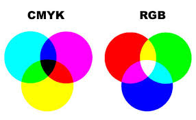

RGB is dus gebaseerd op pixels die de kleuren rood, groen en blauw hebben. Deze kleuren zijn de basis voor alle andere kleuren. RGB werkt op een zwarte achtergrond. Als je lampjes uitstaan dan zie je alleen zwart oftewel niks. Een computer werkt niet met procenten maar met getallen. Rood geef je dus aan als: 255,0,0 en niet als 100% rood, 0% groen, 0% blauw. Een computer kan deze getallen om zetten naar binaire getallen. Als hij dit heeft gedaan dan kan de computer het beeldscherm aansturen.
Het CMY-model wordt gebruikt in printers om afbeeldingen die op de computer te staan af te drukken in kleur. Het CMY-model werkt niet hetzelfde als het RGB-model. Dat komt door de achtergrond waar de kleurmodellen op werken. Zoals je weet werkt het RGB-kleurmodel alleen op een zwarte achtergrond zoals een zwart beeldscherm. Maar bij het CMY-kleurmodel werken de kleuren alleen op een witte achtergrond, omdat het papier in de printer wit is. CMY staat voor cyan, magenta en yellow. Als je deze drie kleuren mengt dan ontstaat er geen zwart maar meer een donkergrijzige kleur. Om toch zwart te kunnen maken wordt de kleur zwart hieraan toegevoegd. Dan ontstaat het CMYK-kleurmodel. De K staat voor key of blacK. Een computer moet de kleuren van RGB naar CMY omzetten om een afbeelding te kunnen afdrukken. Daarvoor is een formule: CMY = 255 - R, 255 - G, 255 - B.
